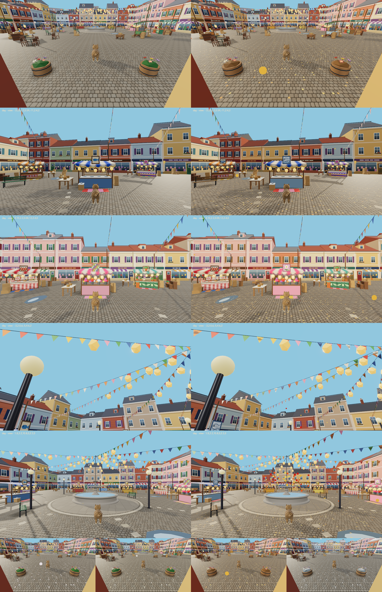

Left: before. Right: after (autumn, today's season). Rows: the spawn (leaves on the cobbles, russet tubs); the fishmonger (hand-painted blue and silver fish sign); the florist (pink sign, pink counter); the bunting (paw, fish and mouse flags among the plain ones); the fountain's rare burst of petals or leaves with a hummed tune. Bottom strip: the spawn in spring, summer, autumn and winter (frost on awnings and roofs). Signs are pictures only, never letters.
